In questa pagina è possibile gestire il magazzino utensili della macchina.

Vista Magazzini / Utensili
Pulsanti per visualizzare disposizione magazzini o lista utensili nella parte superiore della pagina a sinistra.

 | Magazzini |
 | Utensili |
Barra superiore
Nella barra superiore della pagina a destra è possibile esportare o importare gli utensili.
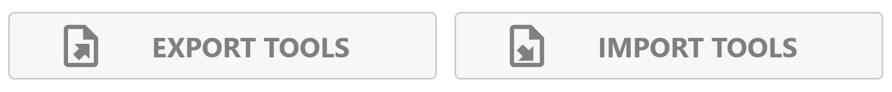
Queste funzionalità sono disponibili solo se l’utente inserisce la password di operatore nella pagina di impostazioni.
Esportazione utensili  | |
Importazione utensili 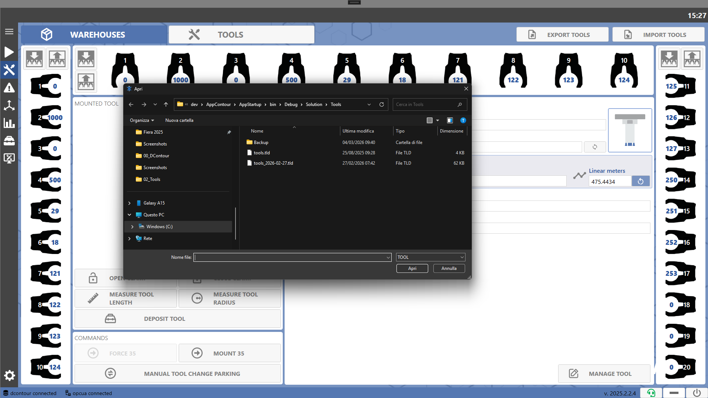 |
Tipologie Utensili
Di seguito elencate le tipologie degli utensili gestiti dal sistema.
 |  | Utensile Profilato |
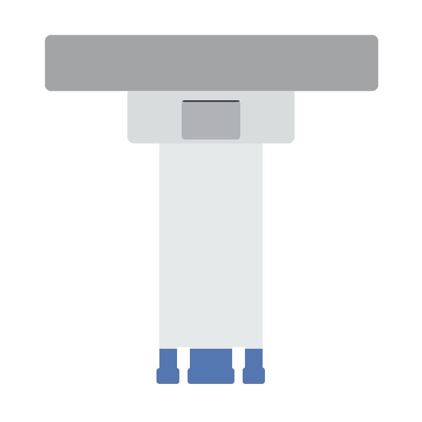 | 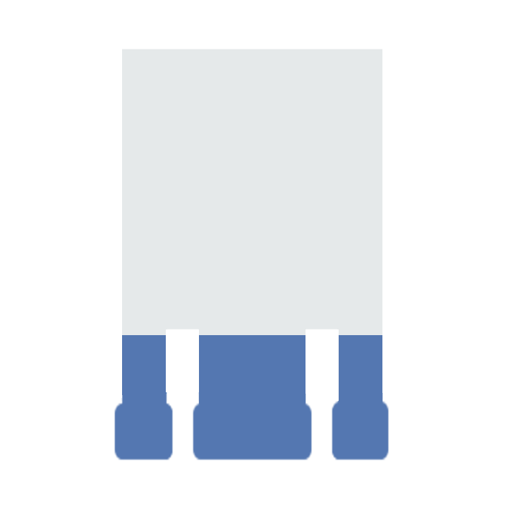 | Utensile Foretto |
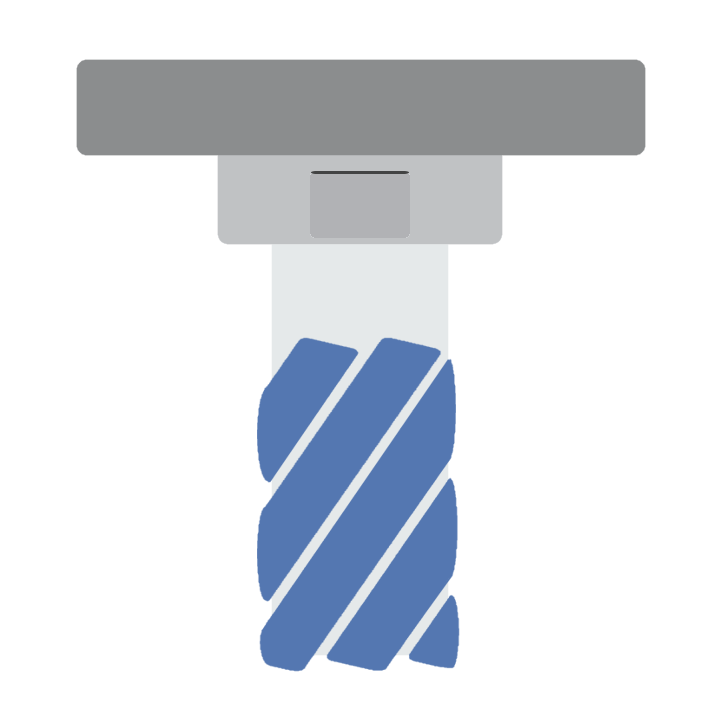 | 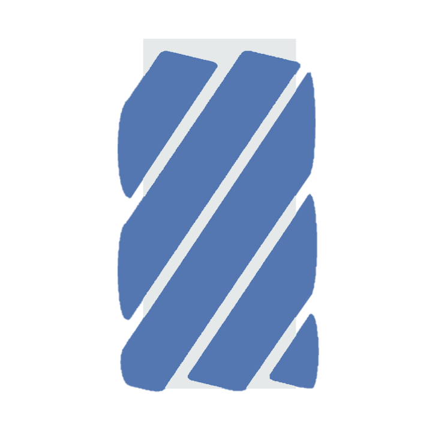 | Utensile Fresa |
 |  | Utensile Fresa da scasso |
 | 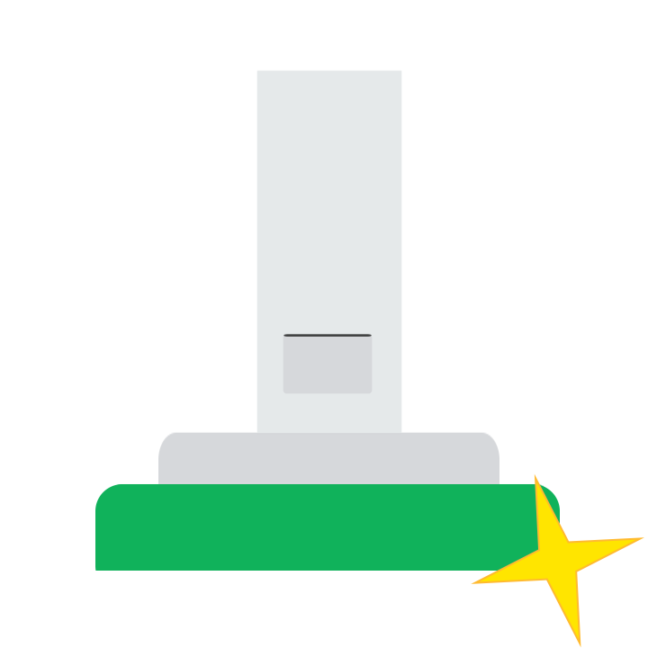 | Utensile Piatto di lucidatura |
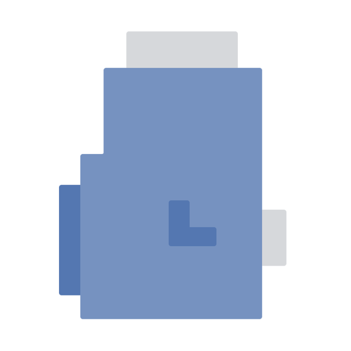 |  | Testa rinvio angolare |
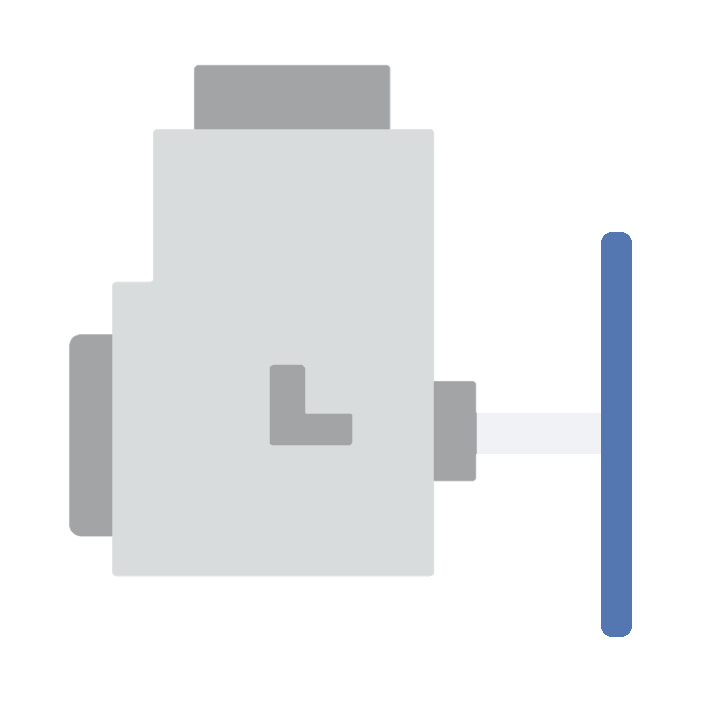 | 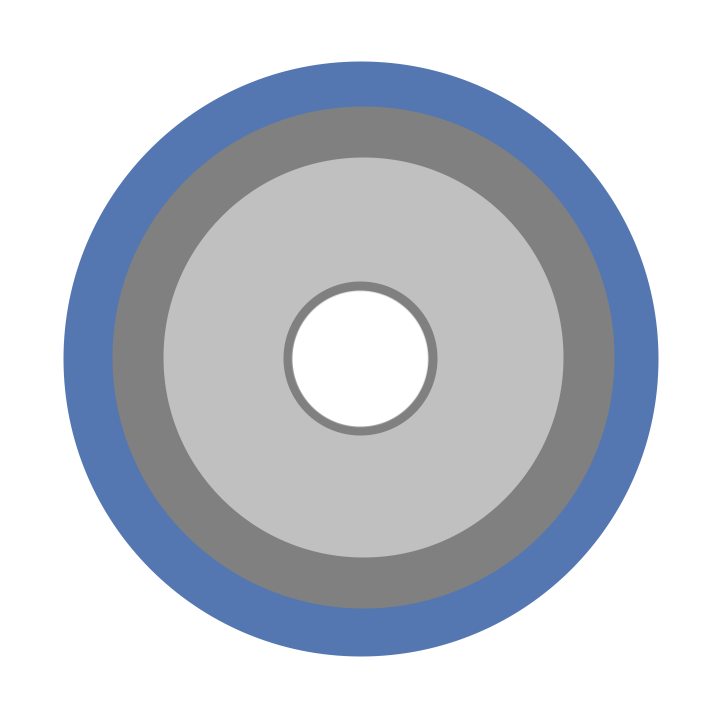 | Utensile Disco rinvio angolare |
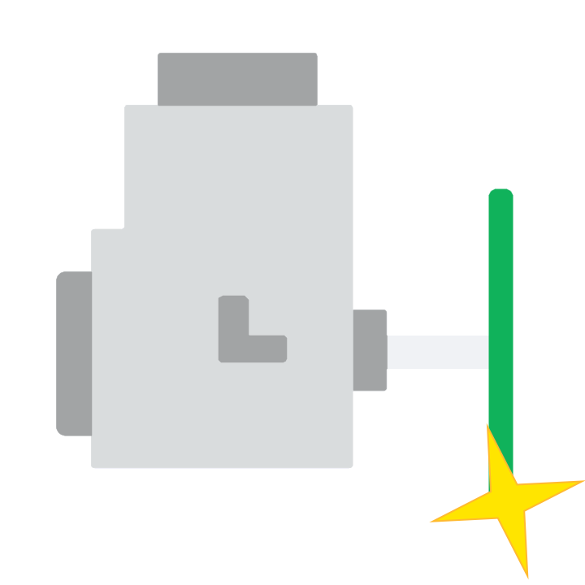 |  | Utensile Disco di lucidatura rinvio angolare |
 |  | Utensile Piatto di lucidatura rinvio angolare |